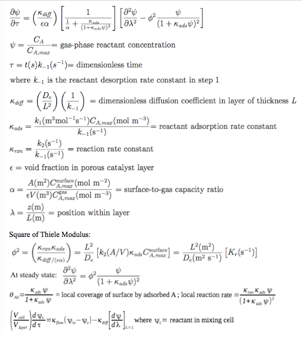

Dynamic diffusion and reaction in a porous solid catalyst layer
This lab simulates diffusion and reaction in a porous solid catalyst. Reactant gas A flows into a well-mixed reactor, and is converted to product B over a layer of porous solid catalyst, which covers the walls of the reactor. Reactant A diffuses into the catalyst layer where it reacts to product B over the active sites of the internal surface of the layer, and B diffuses out of the layer.
You can select between two reaction models. In Model 1, the rate determining step is AS ⇀ B + S. Model 1 has relatively simple behavior.
(step 1) A + S ⇌ AS
(step 2) AS ⇀ B + S
(overall) A ⇀ B
where AS is A adsorbed over a surface site S, step 2 is the rate-determining (slow)
step, and the reaction is far from equilibrium under these conditions.
In Model 2, the rate determining step is AS + S ⇀ B + 2S. Model 2 can exhibit complex behavior.
(step 1) A + S ⇌ AS
(step 2) AS + S ⇀ B + 2S
(overall) A ⇀ B
Model 2 is a self-inhibited, catalytic surface reaction. It can be considered a prototype of other self-inhibited reactions such as carbon monoxide oxidation over precious metal catalysts.
The discussion below considers only Model 2. The equations are similar except that, in Model 1, the terms (1 + Kads ψ) are not squared.
The partial differential equation for the reactant is shown below in dimensionless form. This equation is solved using an explicit, finite-difference numerical method. At the boundary between the catalyst layer and the reactor wall, there is a zero-flux boundary condition. At the boundary between the catalyst layer and the gas in the reactor, the gas in the layer is matched to the reactor balance equations.
The input parameters in the simulation are the dimensionless parameters defined below. The inlet reactant concentration set by the slider is the dimensionless concentration ψ below. The solutions are valid when Krxn < 0.10.
Model 2 can exhibit multiple steady states under some conditions: for certain input parameter values, two possible solutions of product formation rate and concentration profiles in the catalyst layer can be obtained. There are two possible causes of this rate multiplicity. One is the coupling of the nonlinear kinetics with the material balance over the reactor (CSTR), even when diffusion resistance in the layer is negligible. This cause is not operational here at the low conversions obtained with the default parameter values. The second cause is the coupling of the nonlinear kinetics with diffusion resistance in the porous catalyst layer. This effect can be seen here at the default parameter values.
For example, for default input parameter values, select constant input and set the inlet concentration to 1.0 for some time, then decrease the concentration to 0.5 and note the steady-state solution. Then click off the input and then click it back on and see a different solution obtained. Then increase the inlet concentration for some time to 1.0 and then decrease it back to 0.5 and see the original solution obtained.
Model 2 can also produce more product, on average, during cycling than it can produce at steady-state operation at the mean inlet concentration. For the default input parameter values, the maximum average rate is obtained with a sine-wave period of 556, and a square wave, 50% duty cycle period of 370.
A detailed explanation of this system is provided in "Scaling parameters for dynamic diffusion-reaction over porous catalysts," by R. K. Herz, Ind. Eng. Chem. Res., 2015, 54 (16), pp 4095-4102, http://pubs.acs.org/doi/abs/10.1021/ie503860w, which is also available without charge at escholarship.org, http://escholarship.org/uc/item/9bc7v3kv
